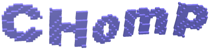

|  |
Computational
Homology Project |
These few HTML pages included in the CHomP Software source code package have been extracted from the CHomP website. Please, consult that website for the most up-to-date version of these web pages, and also for additional information.
The software provided here is related to algorithmic homology computation of cubical sets and maps, simplicial complexes, and chain complexes. In addition to that, some software useful in related fields is also supplied here, including software for manipulating cubical sets and maps.
The software package consists of programs and a C++ library, both available at the CHomP website for download with their source code under the terms of the GNU General Public License (note that this license applies also to the library!).
This package also includes a set of examples which illustrate some aspects of the data formats that are used by the programs, and also how to use the programs themselves.
A nice interactive program called CHomP Software Chooser is a portable Python script which allows one to compose the command line of most CHomP programs in an easy way just by filling out a form. It shows descriptions of all the programs and their command line arguments.
The main program in the package is homcubes which is an advanced program for the computation of homology of cubical sets, including relative homology, and also for the computation of homomorphisms induced in homology by combinatorial cubical multivalued maps. This program follows an algorithm described in the paper Graph approach to the computation of the homology of continuous maps by K. Mischaikow, M. Mrozek, and P. Pilarczyk.
The most important of the other programs contained in this package are homchain - a program for the homology computation of finitely generated free chain complexes (with the support for coefficients in Z or Zp), and homsimpl - a program for the homology computation of finite simplicial complexes. In addition to these programs, the package contains many other (hopefully useful) programs.
The package also contains a C++ library interface to the homology computation routines, which one can use in one's own software. The CHomP library allows a C++ programmer to access the data structures and homology computation procedures directly from their own programs, without the need to write data to files and then run homology programs which would read them in turn. This makes it easy to write fast software that utilizes homology computation algorithms.
A new version of the homology computation algorithms for full cubical sets based on bitmaps and algebraic coreductions is implemented in the program chomp (contained in the basic version of the Homology Package). This program is capable of reading several formats of input files, including the text formats supported by homcubes, and a binary bitmap format as well. It contains multiple engines for the homology computation, both the new algorithms and the ones available in homcubes and chom.